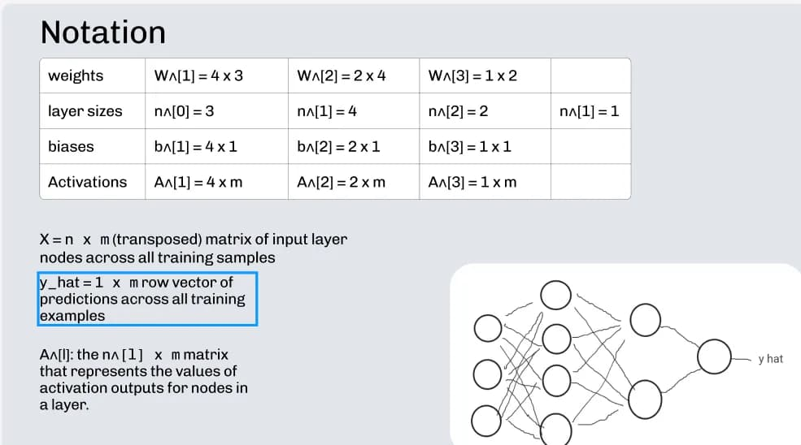

Learn to build a neural network from scratch — yes, really
A step-by-step walkthrough building a neural network from first principles, covering forward/backward pass, loss, and training.
Read on MediumMy ML philosophy is to deeply understand the calculus, statistics, and linear algebra behind each model I use. I try to first build them from scratch, and then I use the latest modern libraries to create a robust solution.
I learned the math and intutition behind neural networks from Andrew Ng's Deep Learning Specialization on Coursera. Then I built what I learned about. Tensorflow and Pytorch help me achieve me craft deep learning architectures like GANs, VAEs, CNNs, and Transformers.
I learned the holy trinity of Numpy + Pandas + Matplotlib. Then I mastered scikit-learn, diving deep into techniques like feature engineering, classification metrics, grid search, SVMs, decision trees, ensemble methods, gradient boosting, and more.
Strong foundations in linear algebra, probability, optimization, and numerical methods that drive reliable model design and interpretation.
As an early AI adopter since 2023, I build LLM-powered products with prompt engineering, RAG, tool calls, and powerups such as Gemini CLI, Cursor, Coderabbit, and Claude Code.
I'm a fullstack web dev who's not afraid of the hard stuff - Docker, Linux, Flexbox, Grid, Github Actions, PostgreSQL, and more.
Essentially a professional JS Dev. I use TypeScript and React on the frontend, and switch between Deno, Bun, and Node on the backend.
I use Docker, Github Actions, and bash scripts to streamline my development workflow and increase DX (developer experience)
Using my web design knowledge, I transfer my mockups from Figma to HTML and CSS. I use SASS, Tailwind, and ShadCN as my CSS powerups of choice.
React is my front-end framework of choice, and I use the skills I learned in React and apply them to creating mobile applications in React Native.
Next.js is my framework of choice for building server-rendered React applications, while Astro allows me to create fast, statically generated websites with ease.
I use relational databases (Postgres, MySQL) for transactional data, strong schemas and complex queries, leveraging SQL, indexes and ACID guarantees. For flexible, document-oriented workloads I use MongoDB for schemaless data, rapid prototyping and horizontal scaling. I choose the right database based on consistency needs, query patterns and scale. I have mastered both ORMs like Prisma and Drizzle as well writing the raw query language for both SQL and NoSQL databases.
I use cloud databases like Supabase, Firebase, and Turso to quickly set up scalable backends with minimal configuration. These platforms provide built-in authentication, real-time data sync, and serverless functions, allowing me to focus on building features rather than managing infrastructure.
I follow Feynman to the core - you don't truly know something unless you can teach it to someone else. So here it is: complete AI/ML guides
A step-by-step walkthrough building a neural network from first principles, covering forward/backward pass, loss, and training.
Read on MediumExploring Jules, Google's async agent system, and how it can augment coding workflows and automate repetitive developer tasks.
Read on MediumSome of my recent projects showcasing full-stack development, browser extensions, and modern web technologies.
A secure, fully frontend API key manager based on local storage, and is able to be self-hosted as well via Docker. You can export/import env files, export/import entire profiles and folders, and more.

A chrome extension that allows you to bookmark timestamps and notes on your favorite youtube videos. Also has cloud sync via github gists and allows you to export/import your bookmarks.

A chrome extension loom clone that allows users to record their screen and camera and download the webm recording for free.
Learn from my years of knowledge, all compiled into these Jupyter/Colab notebooks.
Here is my process for how I design and code a website:
I use the principles of web design to create a mockup of what I want my site to look like in Figma.
I then take the specifications from my Figma design and transfer it into simple HTML and CSS, using stuff like Bootstrap, Tailwind, and SASS to power up my CSS.
Using Node.js and Express, I create routes and serve static content on those routes. I create an API behind the scenes for database and user management. If I'm only working a front-end intensive app, I will use a service like Firebase for my backend needs.
I use Google OAuth and session authentication to authenticate users to the website, allowing them to edit data on their account. I make sure to hash passwords and use trusted security methods.